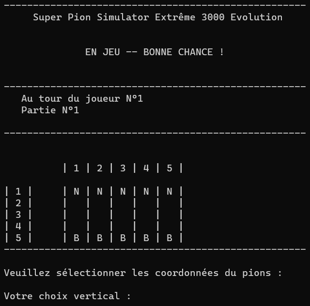

Galerie d'images



Pour ce projet, je travaillais en équipe de 3 personnes. Pour ce projet, nous avons réalisé un mini-jeu de dames sur console. Cependant, dans ce jeu de dames, nous avons créé une IA qui au fur et à mesure des parties, apprenait à mieux jouer. Vous pouvez choisir entre faire s'entraîner l'IA ou jouer contre elle.
Avant de développer et d'implémenter l'IA dans notre jeu, il nous fallait le jeu.
La première partie de ce projet était donc de développer le jeu.
Pour le développement du jeu, nous avons décidé de le développer sans interface graphique, le jeu
fonctionne donc
directement dans la console.
Tout d'abord, quand vous lancez le jeu, le menu principal s'affiche. Plusieurs choix vous sont donc
proposé.
Si vous décidez de consulter les règles du jeu, nous avons fait en sorte qu'elles restent affichées jusqu'à ce que vous entriez le mot "OK" dans la console. Cela permet à chacun de lire tranquillement les règles du jeu sans avoir à faire une course contre la montre.
Si vous décidez de commencer une nouvelle partie, le programme vous demandera d'abord si vous voulez entraîner l'IA ou jouer contre l'IA. Le programme vous demandera ensuite la taille du plateau de jeu. Elle doit être comprise entre 3x3 et 10x10.
L'interface en jeu reprend le même type d'interface que les menus principaux.
Sur cette interface, vous pouvez voir l'état du plateau actuel ainsi que la numérotation des
cases.
Pour jouer un coup, le programme vous demande de rentrer un à un les coordonnées de votre pion (Vous
jouer les pions blanc (B) ).
Ensuite, le programme vous demandera quel coup vous souhaitez réaliser.
Une fois votre coup effectué, c'est au tour de l'IA de jouer.
Pour effectuer son coup, l'IA peut réfléchir de deux façons différentes.
À la fin de la partie, si l'IA gagne, elle enregistre dans son tableau les coups qu'elle a effectués. Si les coups sont déjà présents dans le tableau, l'IA lui rajoute 1 sur son coup. Si l'IA perd, elle enlève 1 aux coups qui on était joué et qui sont dans son tableau et n'en rajoute pas dans son tableau.
Pour ce projet, nous étions en équipe de 3. La répartition était la suivante :
Pour ce projet, nous avons utilisé les compétences suivantes :